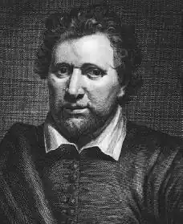

ДЖОНСОН, Бенджамін (Бен) (Jonson, Benjamin — 11.06.1573, Вестмінстер, Лондон — 06.08.1637, Лондон) — англійський поет і драматург.Був сином священика, народився після смерті батька, здогадно у Вестмінстері, де й навчався у школі, очолюваній Вільямом Кемденом, відомим антикваром й істориком, засновником кафедри античної історії в Оксфорді. Джонсон говорив, що зобов'язаний йому "всім, чим він був у мистецтві, і всім, що він знав". Разом із вітчимом, який належав до цеху каменярів, працював на укладанні міської стіни в Сіті. Записався в армію. Був у Фландрії, проявив себе людиною надзвичайної відваги та сили. Приєднався до трупи мандрівних акторів, у якій виконав роль Ієронімо в "Іспанській трагедії", творі, для якого згодом сам дописав декілька сцен. У нотатках театрального мецената Ф. Хенсло Джонсон згадується в 1597 р. як актор і драматург, на той час одружений, і батько однієї дитини. Найперша з відомих п'єс Джонсона — "Острів собак" ("The Isle of Dogs", 1597) — була відверто сатиричною, текст її не зберігся, але відомо, що Д. був заарештований за звинуваченням у наклепі. У 1598 р. Джонсон убив на дуелі свого приятеля, уникнув шибениці, але зажив слави кримінального злочинця.
Популярність Джонсона принесла його друга п'єса — "У кожного своя химера" ("Every Man in His Humour", 1598). Вона й започаткувала комедію звичаїв — один із провідних жанрів у творчості Джонсона. Одним із виконавців у сценічному втіленні цієї п'єси трупою Лерда Чемберлена в приміщенні театру "Куртина" в 1598 р. був В. Шекспір. Драматург і виконавці по-різному оцінювали художні вартості п'єси. Джонсон був незадоволений постановкою і вважав, що виконавці поцінували її не за ті достоїнства, які були їй притаманні. Наступного року з'явилася п'єса "Кожен без своєї химери" ("Every Man out of His Humour", 1599), поставлена в "Глобусі". П'єса продовжила втілення джонсонівської теорії гуморів, згідно з якою кожна людина має свою вдачу, і ця вдача залежить від того, у якій пропорції перебувають в її організмі чотири основні речовини: кров, жовч, вода і флегма. Класифікація, запропонована Джонсоном, цілком відповідає сучасному ученню про чотири основні типи темпераменту. Характери в п'єсах Джонсона, які створювалися в ті ж самі роки, що й твори Шекспіра, були значно одностороннішими, ніж характери складних, непередбачуваних у своїх вчинках шекспірівських героїв. Джонсон і Шекспір були представниками різних напрямів у розвитку драматургії. Шекспір розвивав "неправильну" драму, єдиним принципом якої було не створювати модних правил. Джонсон прагнув до упорядкування прийомів драматургії.
У 1600 р. Джонсон написав п'єсу "Розваги Цинтії" ("Cynthia's Revels"), яку виконувала трупа хлопчиків Королівської капели. Цинтією в єлизаветинську епоху називали королеву Єлизавету, За своєю тональністю це була сатирична комедія, у ній Джонсон розпочав свої міркування про традиції придворних свят, які він повинен був розвинути при дворі короля Якова І. Третій напрям драматургічної діяльності Джонсона розпочався зі створенням у 1603 р. п'єси "Падіння Сеяна" ("Sejanus. His Fall"), яка була поставлена в "Глобусі", і був продовжений у 1611 р. п'єсою "Змова Катіліни"("Catiline. His Conspiracy"). У них Джонсон розробляв популярну в його епоху проблему влади та випробовував свої сили в жанрі трагедії. На відміну від шекспірівських п'єс цього періоду з античними героями, п'єси Джонсона не мали другого, народного, плану. Характери у них були схематичними, головні герої змальовані парами: Сеян — Тіберій, Катіліна — Ціцерон. П'єси Джонсона вибудовувалися за правилами латинської риторики й були позбавлені шекспірівського розмаїття та динамізму. Іноді в них з'являлися грубі сцени, як у класичних трагедіях чи у Шекспіра. Такою є, наприклад, сцена розправи над Сеяном і його малолітньою донькою. У 1605 р. Джонсон написав свою першу придворну маску "Маска чорноти" ("The Masque of Blackness") на замовлення королеви Анни, яка хотіла постати у дванадцяту ніч 1605 р. в образі чорношкірої правительки. У цьому самому році Джонсон знову потрапив у в'язницю за участь у створенні чергової сатири. Таємна рада визнала її сюжет вибухонебезпечним. Жанр комедії звичаїв розвивався в комедіях "Вольпоне, або Лисиця" ("Volpone, or The Foxe", 1605), поставленій у "Глобусі", "Епісін, або Мовчунка" ("Epicine, or the Silent Woman", 1609— 1610) й "Алхімік" ("The Alchemist", 1610). У "Вольпоне" діє спритний користолюбець — персонаж, відомий із часів раннього італійського Відродження. Але його збагачення і розорення непідвладні долі. Він сам вигадує, як збагатитися на недоліках людей, які його оточують, і, не боячись гріха, оголошує себе смертельно хворим, обіцяючи спадок найуважнішій людині зі свого оточення. Відтоді йому доводиться лише вислуховувати похвальбу на свою адресу та приймати подарунки, досить недешеві, оскільки кожен із візитерів сподівається повернути усі витрати сторицею. У п'єсі Джонсон ім'я кожного персонажа уподібнене до якоїсь тварини (Вольпоне — Лисиця, його спільник Моска — метушлива надокучлива мошка). Цей прийом відсилає нас і до старовинних байок, і середньовічних алегорій. У фіналі Вольпоне та Моска посварилися, ділячи здобич, і їхні хитрощі викрилися. В "Алхімікові" Джонсон повторює цей самий прийом: спритний користолюбець збагачується через легковір'я співгромадян, "продаючи" їм безглузді поради про те, як причарувати кохану ("зодіти чисту сорочку і закапати по дві краплі оцту у вуха та ніс"), чи про те, як привабити покупців у крамницю. Його також викривають після сварки зі спільниками. У 1612—1613 pp. Джонсон мешкав у Франції, де був наставником сина В. Ралі, поета й мандрівника. Джонсон набув впливових заступників в особі графа Пембрука, графині Бедфорд, графа та графині Ньюкастл і родини Сідні. У 1614 р. з'явилася найренесансніша за духом і близька до шекспірівських п'єса Джонсона "Варфоломіївський ярмарок" ("Bartholomew Fair"), у якій штовхаються на ярмаркові та обманюють один одного пихаті провінційні дворяни, злодії, конокради, суддя Овербері (Перебір), Ребі Візі (Діляга) — святенник-пуританин, який воює проти лялькового театру. Все тут переростає у штовханину і безглуздя. У гамір ярмарку вплітається пісенька мандрівного співака та музики Найтінгейла (Соловейка), в якій відчувається розмаїття ярмарку: базарні вигуки, пташиний лемент, лайка, шум бійок, дівочий вереск. Водночас сам поет — частинка ярмарку, і рефреном пісеньки стають слова: "Купіть пісеньку! Нову пісеньку!". Ця пісня Найтінгейла побудована за зразком відомого у XVII ст. жанру "вуличних вигуків". У нього є й інші пісеньки та балади. Герой Джонсона знає, що слово може бути й зброєю: "Лише зачепи мене, хай ти рознощик, поет чи механік, я, будь певен, відшукаю приятеля, який за мене відомститься і вигадає пісеньку на тебе і на твою худобу!.." Незважаючи нате, що Джонсон розходився з Шекспіром у поглядах на завдання та способи створення драматичних творів, критикував його за недбалість стилю і брак ученості, він ставився до Шекспіра з почуттям щонайглибшої поваги. Про це свідчать такі слова Джонсона: "Я люблю цю людину і як ніхто інший шаную її пам'ять, оскільки воістину це була чесна, відверта і незалежна натура". Після смерті Шекспіра Джонсон взяв участь у посмертному виданні шекспірівських п'єс і написав до цього видання вірші, де окреслив значення Шекспіра для його епохи і назвав його "людиною для всіх часів". Погляди на драматургію Джонсона висловив у передмовах і епілогах до п'єс, а також у збірці критичних нарисів "Ліси, або Відкриття про людей і предмети" ("Timber, or Discoveries upon Men and Matter"), опублікованій посмертно в 1640 p. У них Джонсон розмірковує про відмінності у способах пізнання наукою та літературою, підкреслюючи, що письменник, на відміну від ученого, спирається на інтуїцію. Джонсон приєднався до роздумів свого століття про гострий розум, про розум, що все піддає сумніву. Він вважав, що лише за умови, коли учні підуть далі за свого вчителя, можливим буде рух уперед: "Я вдячний і буду довіку вдячний тим, хто мене навчав, але я не насмілюся вважати, що метою їхньої праці та досліджень була заздрість до того, що зможуть доповнити і відкрити нащадки". Але людина, яка обрала шлях сумнівів і поступу, повинна бути, на думку Джонсона, освіченою і вихованою: "Розум визначає своєрідність і властивості дотепності. Якщо він урівноважений, серйозний і спокійний, такою ж є і його здатність грати словами та поняттями. Якщо розум зіпсований, тоді й дотепність позбавлена краси, деформована". Як людина XVII ст., Джонсон виступав за те, щоб дотепність контролювалася розумом. З іншого боку, він не вважав такий контроль гарантією успіху митця: "Щоб писати добре, слід робити три речі: читати найкращих письменників, слухати найкращих промовців і багато вправлятися самому. Проте без допомоги і прихильності природи жодні мистецтва та правила не мають сили", але й "жодні поради не допоможуть дурневі", "те, що є наслідком злиденності розуму, гірше від хаосу надмірності". У рік смерті Шекспіра з'явилася п'єса Джонсона "Диявол у дурнях" ("The Devil is an Ass", 1616) про маленьке чортенятко Пага (Pug) — щось на взірець шекспірівського пустоголового Пека, який, прийшовши у світ людей, переконується, що люди значно підступніші і зліші, ніж він. Після цього Джонсон не писав для публічного театру протягом десяти років, У цьому ж 1616 р. Джонсон видав збірку епіграм, підготував зібрання своїх творів і опублікував їх під назвою "Праці" ("Works"), яка стане традиційною для англійських видань такого типу. Але сучасники іронічно сприйняли таку назву, вона видалася їм надто пишномовною. До праці письменника ще не звикли ставитися як до чогось серйозного, хоча ще у 80-х роках XVI ст. в Англії широкого розголосу набув трактат Ф. Сідні "Захист поезії", в якому обстоювалася особлива, висока роль поета та поезії в житті суспільства, а чесноти самого Джонсона поціновувалися досить високо: він першим удостоївся звання Поета-лауреата, здобув ступінь магістра мистецтв Оксфордського університету, отримав право читати курс риторики у Грехем-коледжі Лондона і був призначений офіційним літописцем Лондона. Джонсон зробив внесок у розробку жанру придворної "маски" — святкового дійства на Різдво, Масниці, свято особистого або суспільного характеру, яке відбувалося при дворі з обов'язковою присутністю монарха.